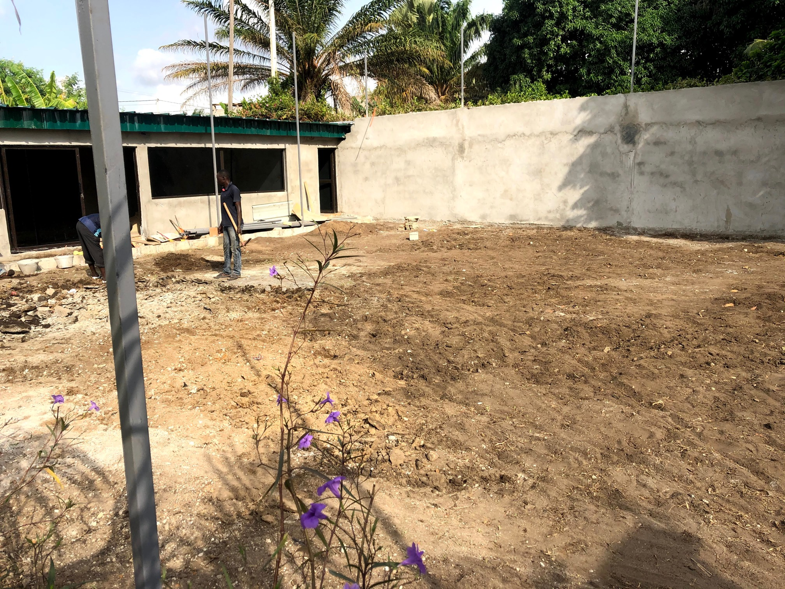

Cadrage initial
Analyse du site, lecture du programme, hiérarchisation des contraintes et identification des points sensibles avant lancement.
Nous sécurisons le cadrage, les arbitrages, le séquencement des lots, les approvisionnements utiles et la qualité finale, afin de livrer un ouvrage cohérent avec l'usage visé, le niveau d'exigence attendu et la valeur recherchée par le commanditaire.
Analyse du site, lecture du programme, hiérarchisation des contraintes et identification des points sensibles avant lancement.
Alignement entre gros oeuvre, second oeuvre, finitions et lots techniques pour réduire les interfaces mal tenues.
Organisation du planning, mobilisation des équipes, séquençage des interventions et visibilité sur les achats utiles.
OPR, contrôle de conformité, levée de réserves et qualité perçue pensées en vue de l'occupation, de l'exploitation ou de la commercialisation.
Nous intervenons sur trois registres complémentaires : la construction neuve, la réhabilitation-rénovation et l'aménagement-reconfiguration. Cette lecture nous permet de qualifier rapidement le bon périmètre, les contraintes principales et la meilleure séquence d'intervention.
Nous accompagnons les maîtres d'ouvrage qui doivent transformer un terrain, un programme ou une intention de projet en chantier piloté, avec logique de gros oeuvre, second oeuvre, lots techniques, finitions et réception.
Programme lu, points sensibles identifiés, priorités de qualité clarifiées.
Planning, lots à mobiliser, jalons de décision et logique d'approvisionnement.
Contrôle, réserves, finition et remise d'un ouvrage réellement exploitable.
Nous abordons la réhabilitation comme une opération de précision : lecture de l'existant, hiérarchisation des reprises, phasage adapté et maîtrise des interfaces entre ce qui est conservé, renforcé, transformé ou modernisé.
Dans les bureaux, commerces, villas et espaces d'accueil, nous reconfigurons les volumes, clarifions les circulations, adaptons les lots utiles et rehaussons le niveau de finition au standard de l'usage visé.
Notre méthode d'exécution donne à chaque partie prenante une lecture claire des étapes, des responsabilités, des arbitrages et des points de contrôle jusqu'à la remise finale.
Lecture du site, des accès, des contraintes d'environnement et des besoins réellement prioritaires.
Définition du périmètre, enveloppe de référence, postes sensibles et niveaux de qualité attendus.
Ordonnancement des corps d'état, logique d'approvisionnement et séquences d'intervention utiles.
Suivi chantier, arbitrages, contrôles de conformité et maintien du niveau d'exigence jusqu'aux finitions.
Pré-réception, réserves, remise propre et validation d'un usage final cohérent avec la promesse de départ.
Nous accompagnons à la fois ceux qui financent, exploitent ou valorisent le projet, et ceux qui conçoivent, approvisionnent ou exécutent à nos côtés.
Nos références couvrent déjà des immeubles de standing, des villas duplex, des réhabilitations premium et des travaux d'aménagement. Elles démontrent notre capacité à intervenir sur des opérations neuves comme sur des actifs à remettre en valeur.

Une référence structurante pour les opérations où coordination chantier, qualité d'exécution, image du bien et exigence premium doivent rester alignées.

Une intervention représentative des projets résidentiels où confort, qualité perçue, niveau de finition et cohérence d'ensemble comptent immédiatement.

Une référence parlante sur la reprise d'existant, la montée en gamme des finitions et la relance de valeur d'un actif déjà construit.
Nos interventions couvrent également un immeuble R+6 à Riviera M'Badon, une réhabilitation de villa duplex à Angré, une construction à Cocody Beverly, une réhabilitation avec aménagement à Cocody Angré, ainsi que des travaux de réparation des voies. Cette diversité confirme notre capacité à intervenir sur plusieurs typologies d'ouvrages, de contextes et de niveaux d'exigence.